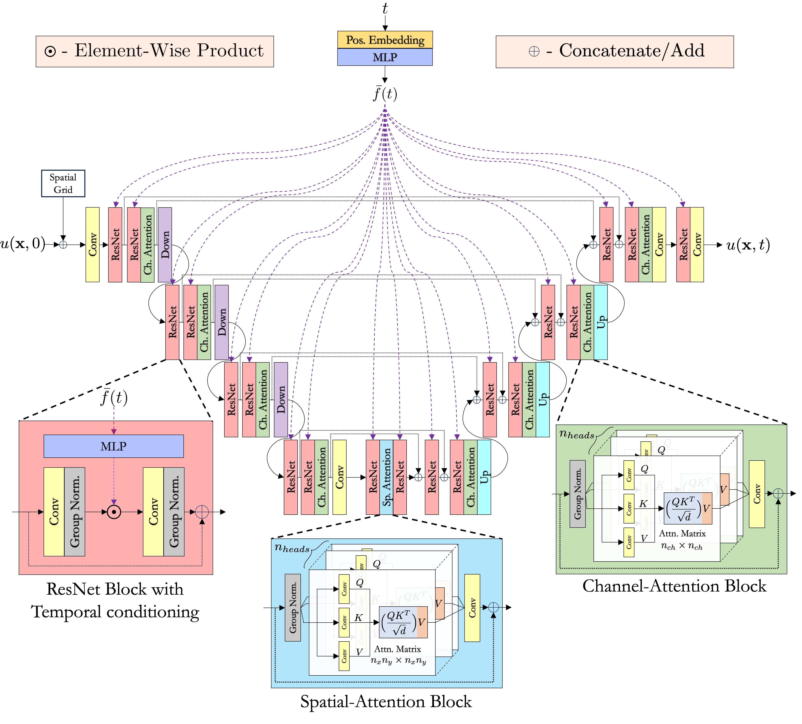
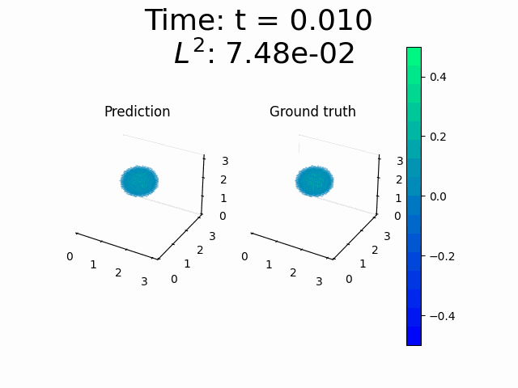
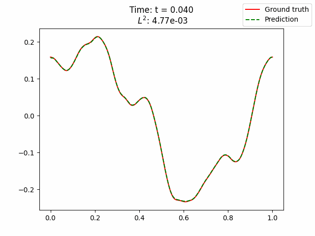

DiTTO: Diffusion-inspired Temporal Transformer Operator

We propose an operator learning method to solve time-dependent partial differential equations (PDEs) continuously and with extrapolation in time without any temporal discretization. The proposed method, named Diffusion-inspired Temporal Transformer Operator (DiTTO), is inspired by latent diffusion models and their conditioning mechanism, which we use to incorporate the temporal evolution of the PDE, in combination with elements from the transformer architecture to improve its capabilities.
Visualizations
Below are vizualizations of various time-dependent PDEs and their solution using DiTTO. For full details, please refer to the paper here.Navier-Stokes
 The time-dependent two-dimensional incompressible Navier-Stokes equation for a viscous, incompressible fluid in vorticity form is given by:
The time-dependent two-dimensional incompressible Navier-Stokes equation for a viscous, incompressible fluid in vorticity form is given by:
Hypersonic Flow
 For the hypersonic flow problem, we solve the Euler equations:
where:
For the hypersonic flow problem, we solve the Euler equations:
where:
Wave3d

Here is the equation for the 2D/3D wave problem:
Wave2d

Burgers' Equation

The one-dimensional time-dependent Burgers' equation for a viscous fluid is given by: